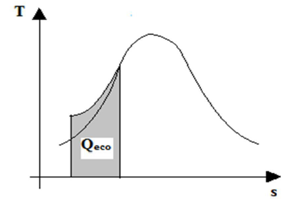
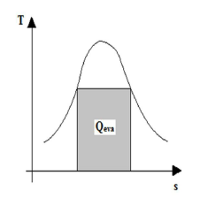
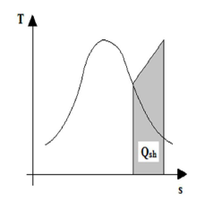

Boiler Drums
Steam Drum
Mud Drum
Water Tubes
Down-comers Water Tubes
Risers Water Tubes
Super-Heaters
Functions of Super-Heater
There are different components present in feed water and steam circuit of boiler and we should know some essential components of these circuit and these are Economizer, boiler drums, water tubes, and super heater.
Economizer
• Economizer is a heat exchanger which takes heat from the flue gas, and increases the temperature of feed water coming from feed water common header to about the saturation temperature corresponding to the boiler pressure.
• Throwing away the flue gases of high temperature into the atmosphere involves a great deal of energy losses. By utilizing these gases in heating feed water, higher efficiency and better economy can be achieved, and hence the heat exchanger is called “Economizer”.
• Structurally economizer is a collection of bent hollow tubular elements through which feed water passes. Outside of the tubes are heated by Exhaust flue gases. More no. of water tubes more will be the heat exchange surface. No. of tubes and tube cross section are pre-designed as per required boiler parameters.

• In the T-S curve above, the shadow portion illustrates the zone of economiser. The heat absorbed by feed water is denoted by ‘Qeco’.
Another essential component of Feed Water and Steam Circuit is Boiler Drum.
Boiler Drums
Two types of boiler drums used in all types of boilers are ‘steam drum’ and ‘mud drum’. Both the drums have specific functions.
Steam Drum
The functions of steam drum in feed water steam circuit are:
(1) To store water and steam sufficiently to meet varying load demands.
(2) To provide a head and thereby aiding the natural circulation of water through water tubes.
(3) To separate vapour or steam from water- steam mixture, discharged by the risers.
(4) To aid in chemical treatments to remove dissolved O2 and to maintain required pH.
Separating steam from two-phase mixtures in the steam drum:
• Steam must be separated from the mixture before it leaves the drum, because:
(1) Any moisture carried with steam contains dissolved salts. In the super heater, water evaporates and the salt remain deposited on the inside surface of the tubes to form a scale. This scale reduces the life of the super-heaters.
(2) Some of the impurities in the moisture (like vaporized silica) may cause turbine blade deposits.
• One of the important functions of steam-drum is to separate steam from steam water mixture. At low pressure (below 20 bar; 1 bar = 1.0197 kg/cm2) simple gravity separation is used. In the method of gravity separation the water particles disengaged from steam due to higher density.
• As the pressure inside the boiler drum increases the density of steam increases, as steam is very compressible. Hence difference between the densities of steam and water decreases. Hence gravity separation becomes in efficient.
• Hence in the steam drum of the high pressure boilers, there are some mechanical arrangements (known as ‘drum internals’ or ‘anti-priming arrangements’) for separating steams from water.
• Following picture illustrates different Anti-priming arrangements used in thermal power plants :
Anti-priming arrangements used in thermal power plants
• “Baffles” are separators which separate the hot steam-water mixture from dry steam and provide a guided path for the dry steam.
• In the “cyclone separator” steam water two-phase mixture is allowed to move in a helical path and due to centrifugal forces the water particles separate out from the two-phase mixture. The small vanes inside the cyclone separator collect the deposited water particles.
• In the “scrubber” the two phase mixture is allowed to move in a zigzag path and it provides the ultimate stage of drying the steam.
• After scrubber steam is allowed to move to super-heated through a perforated screen.
Mud Drum
• Mud drum is another header which is situated at the bottom of the boiler and usually helps in natural circulation of water through the steam tubes. Mud drum usually contains water at saturation temperature, and also the precipitated salts and impurities known as slurries. It is periodically washed to remove the slurry by opening the discharge valve.
Water Tubes
These are also essential for Feed Water and Steam Circuit of Boiler

• Water tubes are bent or straight hollow tubes through which steam water mixture circulates. There are two types of water tubes, viz. down-comer and riser. This downcomer, riser assembly is also known as “Evaporator” (or “boiler proper”). In the evaporator actual state change from water to steam occurs. In the T-S diagram beside, the zone of evaporator is illustrated. ‘Qeva’ is the heat absorbed by evaporator. It is mainly the latent heat of vaporization of water.
Down-comers Water Tubes
As the name suggests down-comers are the water tubes through which water comes down from steam drum to mud drum (see fig.). No vapour bubble should flow along with saturated water from the drum to the down comers. This will reduce the density difference and the pressure head for natural circulation.
Risers Water Tubes
Risers are the water tubes through which steam water two-phase mixture at saturation temperature goes up from mud drum to steam drum. Risers are usually close to furnaces, while the down-comers are away from the furnaces.
Super-Heaters
Super heater is another important part of Feed Water and Steam Circuit of Boiler

• Super-Heater is an important element of the feed water-steam circuit. It is basically a heat exchanger in which heat is transferred to the aturated steam to increase its temperature. In high pressure boilers more than 40% of the total heat is absorbed by the super heaters. The T-S
diagram beside illustrates the heat absorbed by the super heater and is denoted by ‘Qsh’.
• In super-heater the rate of heat absorption is more. Hence, in the modern water tube boilers there are more. Hence, in the modern water tube boilers there are more super heating surfaces.
• Super-heater tubes are exposed to the highest steam pressure and temperature on the inside and the maximum gas temperature on the outside. They are made of costliest alloys.
Functions of Super-Heater
• An increase in inlet steam temperature gives a steady improvement in cycle efficiency. Hence, the function of super-heater is to raise the overall efficiency. In addition, it reduces the moisture content in the later stages of the turbine and thus increases the turbine internal efficiency.
• However, the increase in temperature is limited by the properties of the construction materials of boilers and turbines. Usually the optimum temperature of steam is maintained 450oC at the turbine inlet.
 by
by {kind=link}